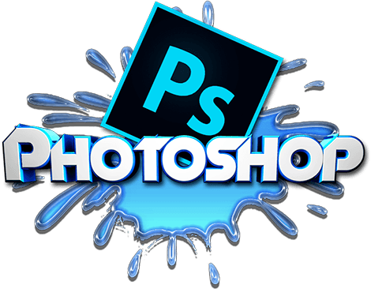
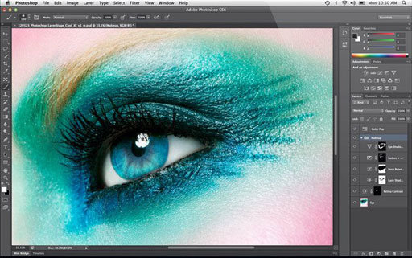

Аккаунты социальных сетей и красочные рекламные баннеры пестрят разукрашенными изображениями всевозможных видов и мастей. Оригинальные рамочки, яркие надписи, многослойность слайдов, прозрачность и размытость картинок – всё это привлекает внимание и вызывает любопытство. Так что, рано или поздно, каждый пользователь интернет-пространства задумывается о приобретении графического редактора.

Но тут же встаёт проблема выбора. Разнообразие типов и видов безгранично. Совсем несложно запутаться в современной навигации и навороченных примочках. А ведь если разобраться, то половина функций может оказаться просто напросто непотребной для пользователя. Так что предпочтение в пользу самых последних версий может оказаться не самым правильным решением. Для начинающих пользователей гораздо полезнее приобретение более простого и незамысловатого фотошопа. Чтобы не допустить ошибки и грамотно выбрать приложение, следует учесть некоторые факторы.

1. Совместимость с программным обеспечением. Конечно же, многие гонятся именно за новыми, улучшенными и усовершенствованными, версиями фотошопа. Но оперативная память не каждого процессора позволит разместить и открыть закаченное приложение. Итогом может стать неработающее приложение и, как вариант, испорченное настроение.
2. Лицензия. Бесплатность и легко доступность привлекала во все времена. Но не стоит пренебрегать покупкой лицензионного редактора. Вероятность качественного использования программы выше и возможностей избежать негативных последствий больше. Может быть и говорят, что лучшее враг хорошего, но в этом случае всё же целесообразнее потратить некую сумму на приобретение лицензионного продукта.
3. Собственные способности. Новичкам в этой сфере деятельности не стоит ожидать высокого качества обработки даже от самых последних версий программы. Необходимо осознавать, что основную работу проделывает сам человек. Именно от его навыков и умений зависит итоговый результат. Вряд ли удастся создать шедевр, если с помощью инструментов редактора сложно просто прямую линию провести. Нечего на зеркало пенять, как говорится.
4. Соотношение цены и качества. Некоторые почему-то непоколебимо следуют ошибочному определению «чем дороже, тем лучше». Но неужели никому в современном мире не приходилось на собственном опыте убедиться в обратном? Сколько известно подлинных историй, когда приобретённые по запредельным суммам товары в итоге оказывались подделкой. А сколько положительных отзывов можно услышать от покупателей не дорогостоящей продукции. В общем, подытожим всё тем, что цифры в графе стоимость ни в коем случае не отвечают за качество приобретаемого товара.